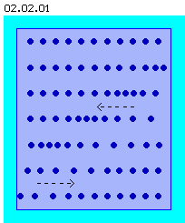

| Alfred Evert | 2003-03-05 |
02.02. No Shockwaves
Longitudinal Waves
Characteristics of longitudinal waves (resp. shockwaves) are, the parts are swinging into spreading direction, i.e. the parts are forward accelerated, afterwards they come back to their old position. The speed of sound differs depending on medium.

If a source of sound produces an additional motion from right side, a pressure front (marked by positions of parts more narrow) will move from right to left through the medium (as marked by the arrow upside).
Afterward the compression of the medium will disperse, i.e. the parts will swing back again to right side (as marked by the arrow downside), until lastly the starting situation exists again.
So, a area of higher density (moving through space) is followed by an area of less density, until lastly the differences of pressures are equalized again. At this animation, this movement process is visualized: one (sound-) movement from right to left is followed by second balancing movement back to right side.
Only at Level of Parts
The aether however is a gap-less and part-less substance, no ´aether-parts´ swing ahead and back, there are no areas of more or less density, there is no elasticity (by previous understanding) within the aether substance.
So the shape of longitudinal waves is impossible within the aether. This kind of waves only are possible as a occurrences of the material world (like previous molecules of fluids or stable bodies) resp. these waves are restricted to the materia of parts. Within the medium of aether however, this kind of movement is not allowed.
Easy to understand and well-known shape of waves are these like the sound spreads. Molecules of air are pushed, locally compressed, this ´pressure-wave´ runs through the air, until an ear registers the sound.
At picture 02.02.01 schematically is shows a section of a medium (e.g. gases or liquids) and some parts within are marked (linearly arranged, in reality molecules naturally would be in chaotic motions). At upper row, same distances represent normal spreading of molecules.
This kind of movements demands the existence of gaps between the particles respective demands a compressible medium. At least there must exist some elasticity of the material, so parts can swing like shown above, e.g. by spreading of sound within solid bodies.
02.03. No Crosswaves
Aether-Physics and -Philosophy